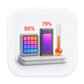

ทำอะไรได้บ้าง
Thrumline เชื่อมต่อกับสายวัดชีพจร Bluetooth และแสดงค่าที่วัดได้ไว้ในที่ที่คุณมองเห็น: หัวใจที่เต้นตามจังหวะหัวใจของคุณ และตัวเลขข้าง ๆ ที่มีสีตามโซนการฝึก คลิกที่มันแล้วการฝึกทั้งหมดจะเปิดขึ้นมา
- หน้าปัดที่ทำเครื่องหมายด้วยโซนของคุณเอง แค่มองแวบเดียวก็รู้ว่าคุณอยู่ในช่วงไหน
- เส้นกราฟช่วงล่าสุด ที่มีสีไปตลอดทั้งเส้นตามโซนที่ค่าแต่ละค่าตกอยู่
- เวลาในแต่ละโซน แคลอรี่ ความแปรปรวนของอัตราการเต้นหัวใจ และอัตราที่ลดลงมาจากจุดสูงสุดล่าสุด
- หนึ่งบรรทัดที่บอกว่าหัวใจของคุณกำลังทำอะไรอยู่จริง ๆ เป็นคำพูดง่าย ๆ แทนที่จะเป็นตัวเลข
- การฝึกที่บันทึกไว้ เมื่อคุณต้องการ เริ่มบันทึกได้จากแผงหรือใน การตั้งค่า ▸ การฝึก แล้วย้อนดูแต่ละครั้งได้ภายหลัง พร้อมกราฟ ค่าเฉลี่ย ค่าสูงสุด และเวลาในแต่ละโซน
- ส่งออกการฝึกที่บันทึกไว้ครั้งใดก็ได้เป็นไฟล์ CSV หรือ TCX
- การแจ้งเตือนโซนระหว่างบันทึก เป็นเสียงหรือการแจ้งเตือนเมื่ออัตราการเต้นของหัวใจอยู่นอกโซนเป้าหมาย
ต้องใช้ macOS 14 Sonoma ขึ้นไป มีให้ใช้ใน 34 ภาษา
เซ็นเซอร์ใดใช้ได้บ้าง
สายวัดหรือสายรัดแขนใดก็ได้ที่ใช้บริการ Bluetooth Heart Rate มาตรฐาน ซึ่งแทบทุกรุ่นใช้ ทั้งสายคาดอกและสายรัดแขนแบบออปติคัล ไม่มีรายชื่ออุปกรณ์ที่อนุญาต และไม่มีการรองรับแยกเป็นรายรุ่น หากอุปกรณ์ใช้โปรไฟล์มาตรฐาน ก็ใช้งานได้
ไม่รองรับ Apple Watch เพราะ Apple Watch ไม่ได้กระจายสัญญาณโปรไฟล์อัตราการเต้นหัวใจ Bluetooth มาตรฐาน และ macOS ไม่มีวิธีอ่านสิ่งที่นาฬิกาบันทึกไว้ ดูรายละเอียดเพิ่มเติมเรื่องนี้ และเรื่องสิ่งที่ใช้ได้ ได้ที่หน้าฝ่ายสนับสนุน
ยังไม่มีเซ็นเซอร์ใช่ไหม
แอปมีตัวอย่างสำเร็จรูปติดมาให้ คลิก ดูว่าหน้าตาเป็นอย่างไร แล้วแอปจะเล่นการฝึกความยาวสี่นาที ให้คุณเห็นว่าแอปทำอะไรได้บ้างก่อนซื้อสายวัด ระหว่างที่เล่นจะมีป้ายกำกับชัดเจนตลอดเวลา ค่าที่สร้างขึ้นจึงไม่มีทางถูกเข้าใจผิดว่าเป็นค่าที่วัดได้จริง
ความเป็นส่วนตัวในย่อหน้าเดียว
Thrumline ไม่มีการเข้าถึงเครือข่ายเลย ค่าที่วัดได้ของคุณจึงไม่มีทางออกจาก Mac ได้ แม้แอปจะพยายามก็ตาม ไม่มีบัญชี ไม่มีการวิเคราะห์ และไม่มีการส่งข้อมูลทางไกล การตั้งค่าโซนและเซ็นเซอร์ที่คุณใช้ล่าสุดจะเก็บไว้ในคอนเทนเนอร์แซนด์บ็อกซ์ของแอปเอง ค่าที่วัดแบบสดจะอยู่ในหน่วยความจำเท่านั้นและหายไปเมื่อปิดแอป สิ่งที่เก็บไว้มีเพียงการฝึกที่คุณเลือกบันทึก ซึ่งอยู่ในคอนเทนเนอร์เดียวกัน และคุณลบการฝึกใดก็ได้ในแอป ไม่มีสิ่งใดออกจาก Mac ของคุณ เว้นแต่คุณจะส่งออกการฝึกเป็นไฟล์เอง นโยบายความเป็นส่วนตัวฉบับเต็มกล่าวถึงเรื่องเดียวกันนี้อย่างละเอียดกว่า
แอปอื่นๆ จากผู้พัฒนาคนเดียวกัน
แอปเล็กๆ ที่แต่ละตัวทำเรื่องเดียวให้ดี ไม่มีบัญชี ไม่มีโฆษณา และไม่มีแอปไหนติดตามคุณ

StatuetteCPU แรม ดิสก์ และเครือข่ายบนแถบเมนูMac Tocketteตัวจับเวลาที่ลากครั้งเดียวจากแถบเมนูMac
Tocketteตัวจับเวลาที่ลากครั้งเดียวจากแถบเมนูMac Zonetteทุกเขตเวลาที่คุณสนใจ แค่คลิกเดียวMaciPhone และ iPadAndroid
Zonetteทุกเขตเวลาที่คุณสนใจ แค่คลิกเดียวMaciPhone และ iPadAndroid Lunetteดวงจันทร์และดวงอาทิตย์ในแวบเดียวMaciPhone และ iPadAndroid
Lunetteดวงจันทร์และดวงอาทิตย์ในแวบเดียวMaciPhone และ iPadAndroid Lunaretteปฏิทินจันทรคติ ในสี่ธรรมเนียมMaciPhone และ iPadAndroid
Lunaretteปฏิทินจันทรคติ ในสี่ธรรมเนียมMaciPhone และ iPadAndroid Pausetteพักเบาๆ ให้สายตาและหลังของคุณMac
Pausetteพักเบาๆ ให้สายตาและหลังของคุณMac Poisetteนั่งหลังตรง โดย AirPods ที่คุณสวมคอยเตือนMaciPhone และ iPad
Poisetteนั่งหลังตรง โดย AirPods ที่คุณสวมคอยเตือนMaciPhone และ iPad Hushetteเสียงบรรยากาศสงบๆ ที่ไม่วนซ้ำMaciPhone และ iPadAndroid
Hushetteเสียงบรรยากาศสงบๆ ที่ไม่วนซ้ำMaciPhone และ iPadAndroid Tapsodyเสียงคีย์บอร์ดแบบกลไกขณะที่คุณพิมพ์Mac
Tapsodyเสียงคีย์บอร์ดแบบกลไกขณะที่คุณพิมพ์Mac Nightjarให้ Mac ตื่นอยู่เสมอ ตรงไปตรงมาMac
Nightjarให้ Mac ตื่นอยู่เสมอ ตรงไปตรงมาMac Umbretteหรี่ทุกอย่าง ยกเว้นหน้าต่างที่คุณทำงานอยู่Mac
Umbretteหรี่ทุกอย่าง ยกเว้นหน้าต่างที่คุณทำงานอยู่Mac Prompetteเทเลพรอมพ์เตอร์อยู่ใต้กล้องพอดีMaciPhone และ iPadAndroid
Prompetteเทเลพรอมพ์เตอร์อยู่ใต้กล้องพอดีMaciPhone และ iPadAndroid TalletteเทปกระดาษสำหรับการบวกเลขของคุณMaciPhone และ iPadAndroid
TalletteเทปกระดาษสำหรับการบวกเลขของคุณMaciPhone และ iPadAndroid Probetteทุกข้อมูลทางเทคนิคของไฟล์สื่อ เป็นคำพูดที่เข้าใจง่ายMaciPhone และ iPadAndroid
Probetteทุกข้อมูลทางเทคนิคของไฟล์สื่อ เป็นคำพูดที่เข้าใจง่ายMaciPhone และ iPadAndroid Bindetteรวมไฟล์เสียงเป็นหนังสือเสียงเล่มเดียวที่สมบูรณ์MaciPhone และ iPadAndroid
Bindetteรวมไฟล์เสียงเป็นหนังสือเสียงเล่มเดียวที่สมบูรณ์MaciPhone และ iPadAndroid Lettretteเปิดไฟล์ winmail.dat และ .msg ตามที่ส่งมาMaciPhone และ iPad
Lettretteเปิดไฟล์ winmail.dat และ .msg ตามที่ส่งมาMaciPhone และ iPad Nhanh Tayเรียงคำตอบสี่ข้อให้ถูก เร็วๆiPhone และ iPadAndroid
Nhanh Tayเรียงคำตอบสี่ข้อให้ถูก เร็วๆiPhone และ iPadAndroid